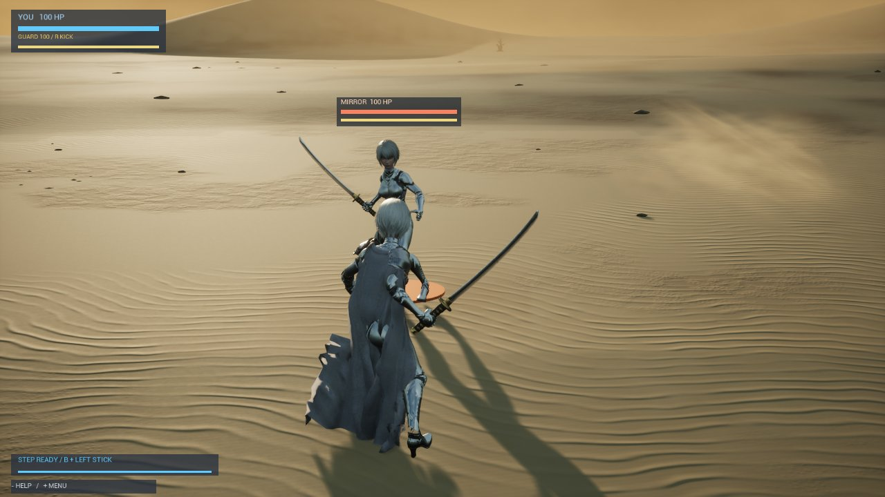
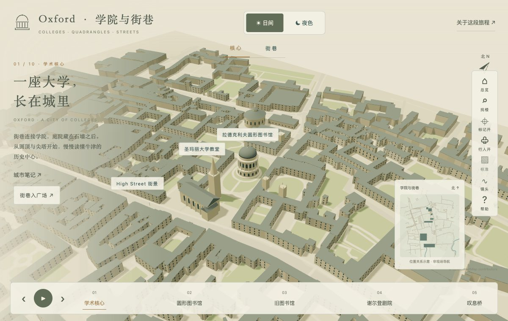
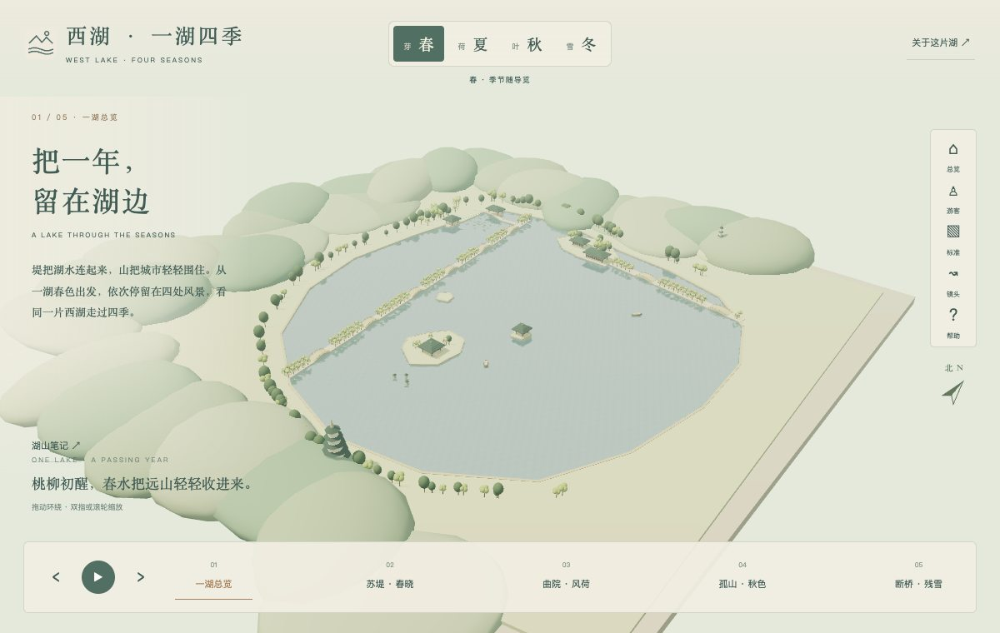
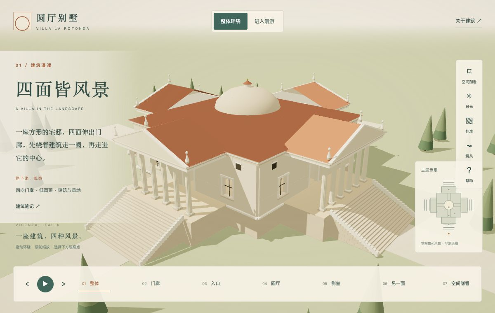
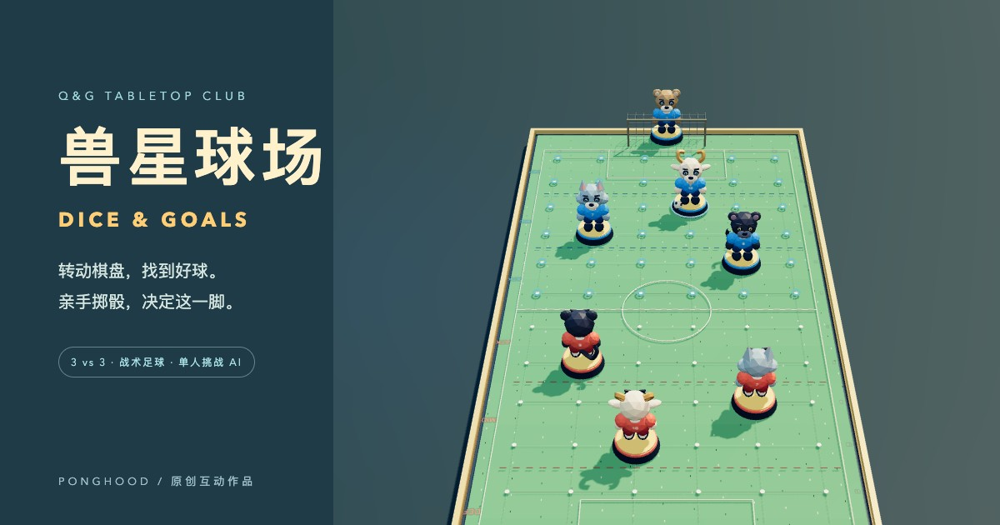
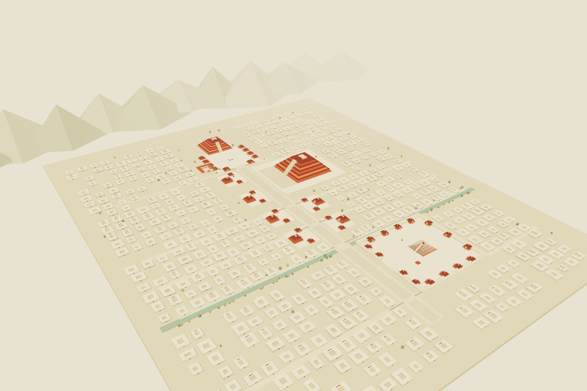
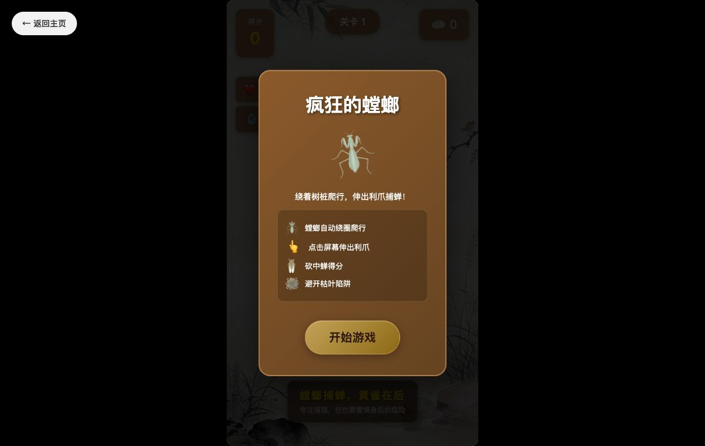

游戏
三维动作游戏 Demo
独立开发一款能真正打起来的游戏，把角色、动作、战斗和场景做到一起。
游戏、App、视觉设计，还有可以亲自逛一逛的互动空间。

独立开发一款能真正打起来的游戏，把角色、动作、战斗和场景做到一起。

给日常记账做一个简单的小工具。从最初的想法到设计、开发和上架，都由我独立完成。

花瓣、羽翼、枝条与鹿角。七幅作品，想象一片不同的森林与湿地。

用线条、留白和少量色块表现人物。五幅图像，两段动态作品。

八个国家主题，一组概念足球鞋。看看足球文化怎样变成造型、材质和画面。

从圆形图书馆走向学院庭院与城市街巷。

从苏堤春晓到断桥残雪。

走进帕拉第奥的圆与方。

三位兽星，一块球场：360° 旋转棋盘、亲手掷骰与 AI 战术对决，低多边形 Q 版足球桌游

从一页书走进一座城。
与李白、杜甫、苏轼、李清照一起打麻将，听诗人在对局中吟诗作对

参考《疯狂鸽子》玩法，操控螳螂绕树桩爬行，伸出利爪捕捉蝉虫，避开枯叶与蜘蛛陷阱
30秒极限挑战！控制笨重惯性小车，在策略性两难抉择中收集财宝，连击越高分数翻倍
我正在开发的足球运动 App，把腕上记录、运动数据和赛后回顾放进一次完整的使用体验。
沿河与街巷两章十站，泛舟穿过学院与桥梁，在水岸之间感受剑桥。
从 UCA 艺术校园走向 Farnham 小镇。
从西校门走向主楼、图书馆与体育馆。
从一号坑军阵到二、三号坑。
从关城走向南北山脊。
从晴日入园到廊下听雨。
沿石道走近五塔，在睡莲池边等待日出。
三大金字塔、狮身人面像与神庙堤道。
从天坛到钟鼓楼。
记录孩子武术训练任务、过程、照片视频和五维点评的本地成长档案工具，让每一次挥拳都有迹可循
面向个人和家庭成员的本地健康记录工具，帮助保存就医记忆、回看历史病情，并在需要时快速整理给医生看
用物品照片、位置照片和一句原声记录东西放在哪里，支持文字搜索、位置历史和本地完整备份
一场水秀的改版设计记录，聊聊故事、演出节奏和现场体验。
没有找到相关作品。试试其他关键词，或清空搜索。